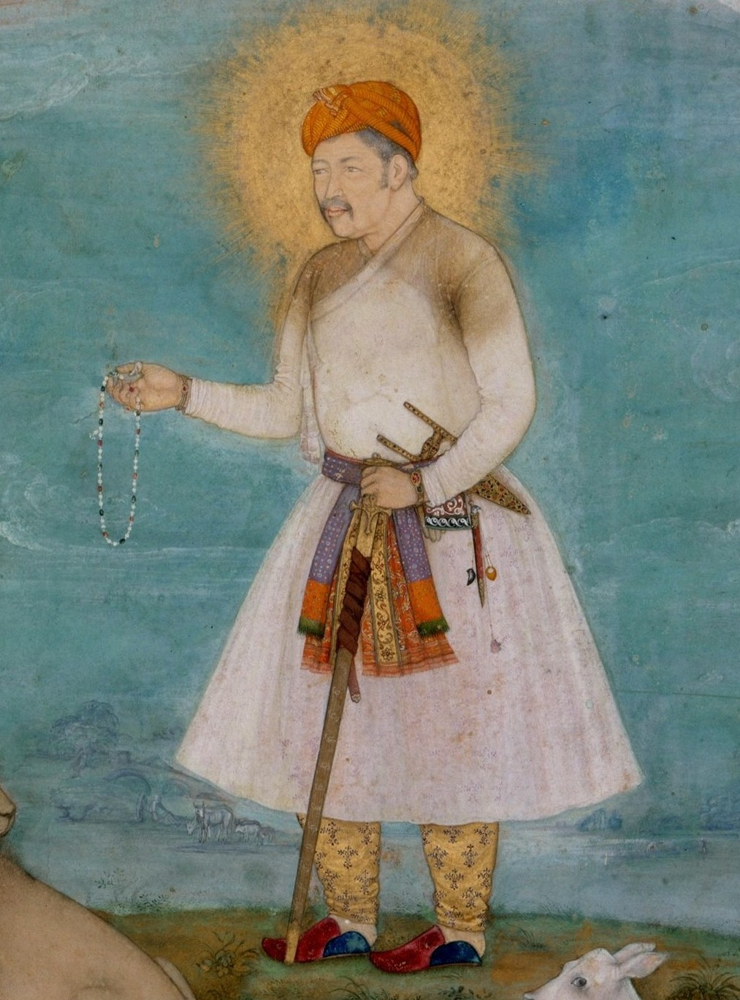
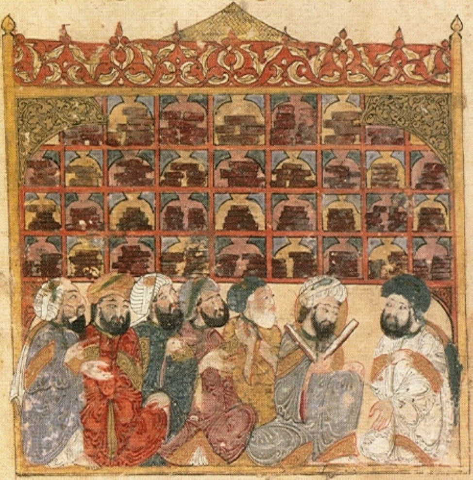
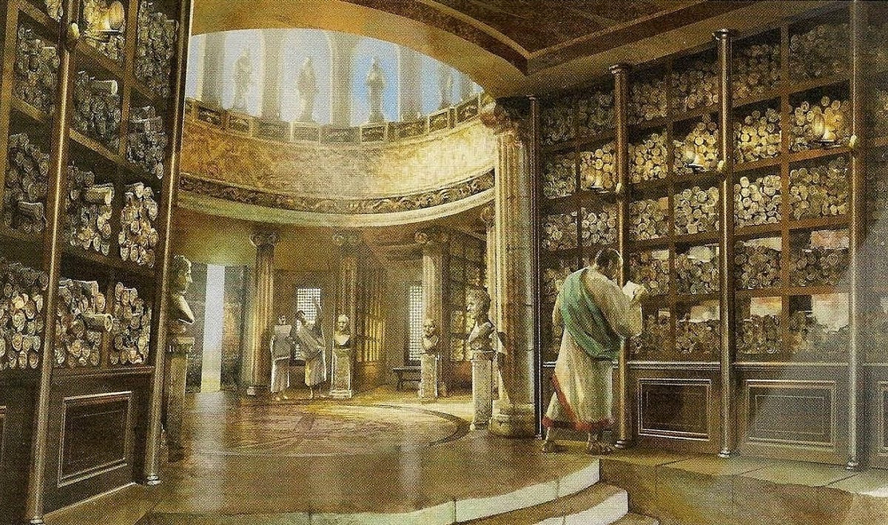
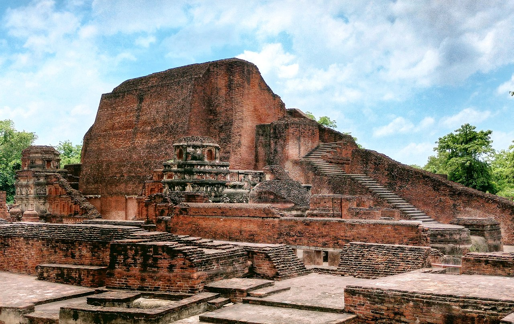
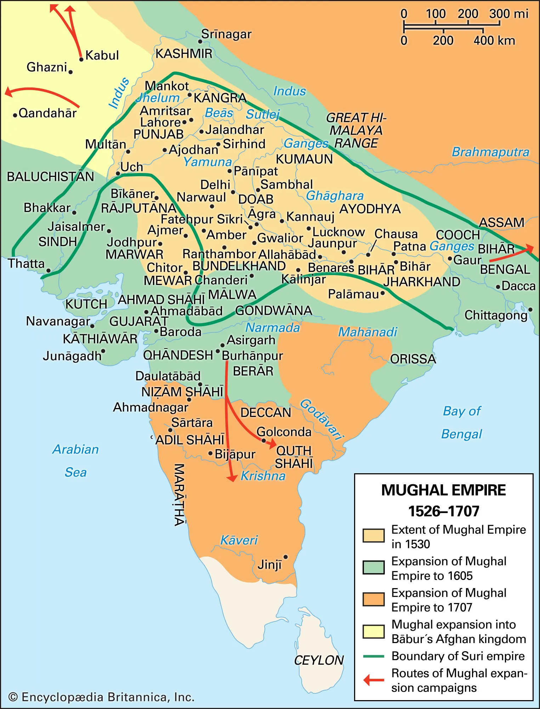
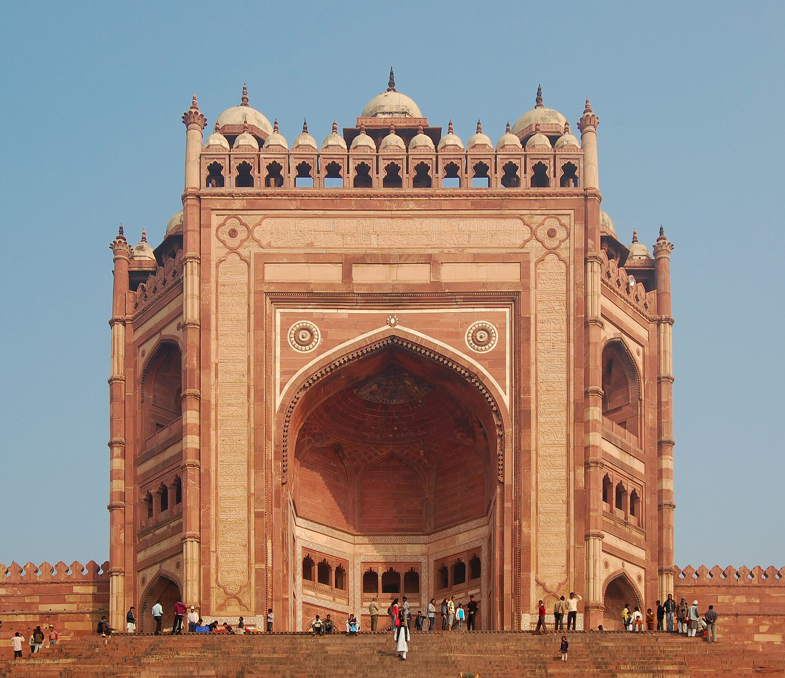
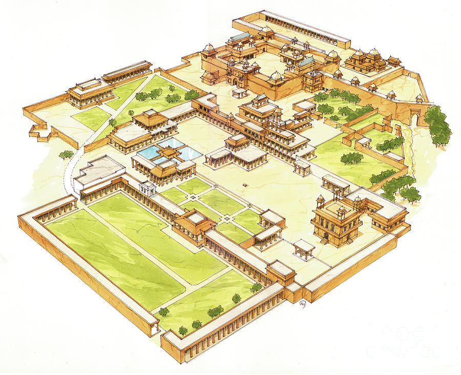
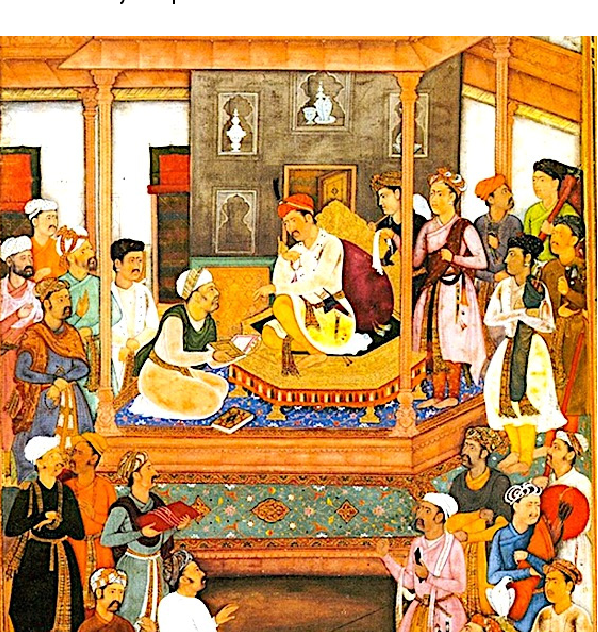

Witnessing the Creation of the Razmnāma in Fatehpur Sikri, 1582
By Alex Kothari
Meet the Traveler
My name is Alex Kothari and I am a historical traveler specializing in early modern empires. I recently journeyed to Fatehpur Sikri, the capital of the Mughal Empire during the reign of Emperor Akbar. I had long been fascinated by stories of Akbar's court, which was famous for its scholars, artists, and religious discussions. However, the main reason I chose this destination was to witness one of the most remarkable cultural projects of the sixteenth century: the creation of the Razmnāma, a Persian translation of the ancient Hindu epic, the Mahabharata.

Emperor Akbar
Previous Expeditions

The House of Wisdom
Baghdad, 9th century. Observed scholars translating Greek scientific and philosophical works into Arabic during the Abbasid Golden Age.

Library of Alexandria
Egypt, 2nd century BCE. Studied one of the ancient world’s greatest centers of learning and manuscript preservation.
Renaissance Florence
Italy, early 1500s. Explored the workshops of artists and humanist scholars during the Italian Renaissance.

Nalanda University
India, 7th century. Visited one of the world’s earliest great universities and centers of Buddhist learning.
Why Visit Akbar's Court?
I chose to visit the Mughal Empire during the 1580s because Akbar's court represented one of the most culturally diverse places in the world at the time. Unlike many rulers of his era, Akbar encouraged discussions between people of different religions and backgrounds.
The creation of the Razmnāma especially interested me because it symbolized cultural blending within the Mughal Empire. By translating the Mahabharata from Sanskrit into Persian, Akbar hoped to promote greater understanding between Hindu and Muslim elites.

Map of India during the Mughal Rule, 1526-1707
Arrival in Fatehpur Sikri
After stepping out of the time machine in northern India, I began my journey toward Fatehpur Sikri, Akbar's magnificent capital city. The roads leading toward the city were crowded with merchants, travelers, soldiers, and caravans carrying goods from across Asia.
As I approached the city, enormous red sandstone buildings rose above the dusty landscape. The heat was intense, and the air smelled of spices, smoke, and incense drifting from busy marketplaces.


Traveler Tip:
Avoid arriving during the hottest hours of the afternoon. The summer heat in northern India can be exhausting for inexperienced travelers.
Inside Akbar's Court
Entering Akbar's court was one of the most intimidating experiences of my journey. Nobles, military officers, artists, and scholars gathered in massive audience halls decorated with intricate carvings and colorful textiles.
Emperor Akbar himself appeared calm, curious, and deeply interested in intellectual discussion. Court officials explained that Akbar frequently invited scholars from different religions to debate important questions.
Illustration from a Mughal manuscript workshop during Akbar’s reign.
Traveler Tip:
Visitors should bow respectfully before speaking in court and avoid interrupting religious discussions.
Witnessing the Creation of the Razmnāma
The most unforgettable part of my journey was visiting the scholars and artists responsible for creating the Razmnāma. Inside a large palace workshop, Hindu scholars recited passages from the Mahabharata in Sanskrit while Persian translators worked carefully to rewrite the text for Mughal readers.
Nearby, court artists painted magnificent illustrations for the manuscript. The pages were decorated with brilliant colors, gold leaf, and incredibly detailed scenes from the epic.
The room smelled of ink, paint, parchment, and incense. Scribes copied text carefully while officials supervised the project. Everyone seemed aware that they were participating in something historically important.

Abul Fazl presenting Razmnāma manuscript to Akbar
Traveler Tip:
Do not touch the manuscript pages without permission. The illustrated copies are considered priceless works of art.
Why the Razmnāma Mattered
At first glance, the Razmnāma might appear to be only a translation project. However, after spending time in Akbar's court, it became clear that the manuscript carried enormous political and cultural significance.
Akbar ruled over a large empire with both Muslim and Hindu populations. By translating the Mahabharata into Persian, he encouraged Persian-speaking elites to better understand Indian traditions and beliefs.
In many ways, the Razmnāma represented the Mughal Empire at its height: wealthy, intellectual, artistic, and culturally diverse.
The Razmnāma also demonstrated Akbar’s broader political strategy. By supporting translations of important Hindu texts, Akbar strengthened relationships with Hindu nobles and presented himself as a ruler of all peoples within the Mughal Empire rather than only a Muslim emperor. The project reflected his policy of sulh-i-kul, or “universal peace,” which encouraged tolerance and cooperation between religious communities.
Few rulers during this period invested so heavily in translating religious texts from another tradition, which made the Razmnāma highly unusual for its time.
Primary Source Spotlight
“However, since it is the custom of the dust-covered travellers on the highway of supplication to assume that the few matters that they have acquired – in accordance with their insight, knowledge, strength and capability, from the book of perfection and the chapter of gnosis – are free of the contamination of deficiencies, and to present them in the royal pavilion of Oneness and the chamber of Eternity, naming them ‘thankfulness’ and ‘praise of God’ – necessarily I followed the customs and writings of this group and made my pen step on this path.”
— Abu'l-Fazl, court historian of Akbar, late 1500s
This quote demonstrates how intellectual life in Akbar's court emphasized scholarship, reflection, and cultural exchange. Abu'l-Fazl's writing reflects the sophisticated literary culture surrounding the Razmnāma project and helps historians understand the importance of knowledge and translation in the Mughal Empire.
Bibliography
Abd al-Rahim ibn Muhammad Bairam Khan Khan-i Khanan. The White Horse Got Stuck to a Rock in Mount Vindhyachal. Folio from the Razmnama . The Metropolitan Museum of Art. https://www.metmuseum.org/art/collection/search/451317.
Alam, Muzaffar, and Sanjay Subrahmanyam. Writing the Mughal World. New York: Columbia University Press, 2011.
Ballhatchet, K. A. “Akbar.” Encyclopedia Britannica. Last modified April 14, 2026. https://www.britannica.com/biography/Akbar.
The Book of War. Philadelphia Museum of Art. https://www.philamuseum.org/exhibitions/the-book-of-war-the-free-library-of-philadelphias-mughal-razmnama-folios.
Eaton, Richard M. India in the Persianate Age: 1000–1765. Berkeley: University of California Press, 2019.
Richards, John F. The Mughal Empire. Cambridge: Cambridge University Press, 1993.